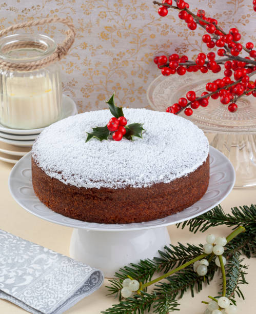

Vasilopita

Description
Vasilopita is a Greek cake with a citrus flavor that's not too sweet. It's traditionally served for breakfast or brunch on New Year's Day. Each person gets a slice starting with the youngest — whoever gets the coin hidden in their piece will have good luck for the year!
Ingredients
- 2 cups white sugar
- 1 cup butter
- 3 cups all-purpose flour
- 6 large eggs
- 2 teaspoons baking powder
- 1 tablespoon fresh lemon juice
- 2 tablespoons white sugar
- ¼ cup blanched slivered almonds
Steps
- Preheat the oven to 350 degrees F (175 degrees C). Generously grease a 10-inch round cake pan.
- Beat sugar and butter together in a medium bowl until lighter in color; stir in flour and mix until the mixture is mealy. Add eggs one at a time, mixing well after each addition. Combine baking powder and milk; add to egg mixture, mix well. Combine lemon juice and baking soda; stir into the batter. Pour into the prepared cake pan.
- Bake in the preheated oven for 20 minutes. Remove and sprinkle the nuts and sugar over the cake, then return it to the oven until cake springs back to the touch, about 20 to 30 additional minutes. Gently cut a small hole in the cake and place a quarter in the hole. Try to cover the hole with sugar. Cool cake on a rack for 10 minutes before inverting onto a plate.
- Serve cake warm.
Home